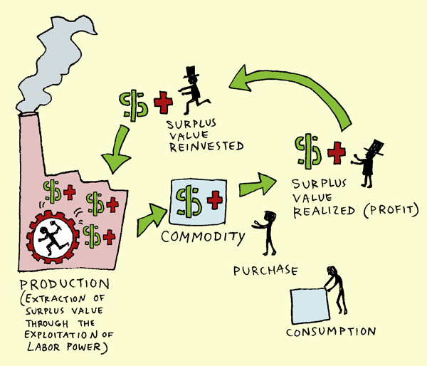

How to get Rich Online (Fast)?
Easy Basics: Wert
Wert entsteht bei der Verrichtung von Arbeit. Trotz des schon beinhaltenden Grundwerts den ein Rohmateriel in sich trägt wird durch die Verarbeitung eines solchens zu einem neuem Produkt extra Wert geschaffen. Wenn wir zum Beispiel Eisen nehmen entsteht in jedem Schritt von der Schöpfung bis zur vollendeten Ware immer mehr Wert.
Es beginnt mit dem Eisenerz, das im Berg schlummert, in dem schon ein Wert steckt. Doch in dieser Form hat das Eisen keinen gesselschaftlichen Nutzen. Erst mit der Hilfe von Arbeit kann es geschöpft werden und gewinnt somit an Wert. Dasselbe Prinzip gilt gilt ebenfals für die Auferarbeitung des Erzes. Wenn viele Arbeiter viele Stunden in dieses Eisen investieren bekommt man ein Endprodukt von hohem allgemeinen Gebrauchswert: ein Auto. Wie man sieht ist es nicht das Produkt, sondern die Arbeit die Wert generiert.
Preis und Wert sind voneinander unabhängig
Der Wert eines Gegenstandes wird durch folgende Kriterien bestimmt:
- der allgemeine gesselschaftliche Nutzen
- der natürlicher Wert des Rohstoffs, bestimmt vom gesselschaftlichen Nutzen
- die Zeit der gebrauchten Arbeit zur Schöpfung und Weiterverarbeitung
- die Anstrengung für die gebrauchte Arbeit von Schöpfung und Weiterverarbeitung
Im übrigen muss die angewandte Arbeit zweckmäßig oder zielgerichtet sein um Wert zu generieren. Egal wie viel Zeit und Anstrengung man in einen Matschkuchen an Arbeit steckt, gewinnt dieser durch jene nicht an Wert.
Preis hingegen folgt, in unserer kapitalistischen organisation der Wirtschaft (um genaus zu sein dem Neoliberalismus), den Prinzipien von "Angebot und Nachfrage". Ein sehr schlauses Prinzip, bei dem rare Resourcen denen zustehen die sich diese lesiten können und nicht jenen die solche brauchen. Ist zum Beispiel eine Milchknappheit, gelangt Milch in die Hände von reichen Ausbeutern für ihr Müsli, anstatt in die von Kindern, bei welchen sie ihr Wachstum fördern würde.
Geräusch des Geldes
Wenn wir nun also erfahren haben, dass Wert durch Arbeit und Preis durch "Angebot und Nachfrage" bestimmt werden können wir darauf schließen, dass, wenn auch abstarkt, in unserer jetzigen Organistation der Gesselschaft Wert, also Arbeit, durch den Preis repräsentiert wird.
Lohnarbeit
Man muss nur einen Blick auf die Lohnarbeit werfen. Als Arbeitnehmer:in verkauft man ihre:seine Arbeitskraft an den Arbeitgeber. Die bittere Realität ist als Arbeitnehmer besitzt man nichts andere als die eigene Arbeitskraft. Woran ich das fest mache? Sobald man durch die Willkür des Arbeitgebers gekündigt wird, gehen schnell die Erspanisse aus, man kann sich keine Miete, Strom, noch Lebensmittel leisten. Man wird zum hungern überlassen! Ja in Österreich haben wir ein Sozialnest, welches das verhindert, aber sobald man arbeitslos ist muss man noch immer in unmenschlichen Bedingungen, also vom und am Minimum, leben.
Man muss Arbeitslose an einem Minimum halten, sie sind nämlich Ersatz! Ersatz für wen? Ersatz für die Ersätzbareb, für euch! Kommt jemand auf die Idee an seinem Arbeitsplatz bessere Bedingungen zu verlangen wird diese:r versucht so schnellst wie Möglich durch jemanden die:der verzweifelt genug ist sich horrende Anstrengung für niedrige Zahlung anzutun ersetzt.
Dadurch bleibt der Preis für die verkaufte Arbeitskraft niedrig.
Mehrwert
Das was viele Profit nennen, ist in Wirklichkeit ausbeutung. Wir haben jetzt gelernt, dass Arbeit Wert generiert und dieser in Form von Preis repräsentiert wird. Doch wie erklären wir uns dann Profit? Der Profit einer Firma ist Mehrwert, welcher von dem Wert den die Arbeiter gemeinsam produzieren, weggenommen wird und sich die Firmenbesitzers und die Aktieninhaber in die eigenen Taschen stecken.
Money, Cash, Zaza!
Oke also der Schlüssel um Reich zu werden ist es in eine reiche Familie geboren zu sein und am besten eine Firma zu erben. Wenn man keine Firma erbt aber viel Geld sollte man sich einfach Anteile an großen Firmen kaufen, Aktien. Wichtig ist auf jedenfall, dass man durch eigene Arbeit nie so reich wie wir es oft sehen werden kann. Das wichtige ist andere auszubeuten und die Arbeit anderer auszunutzen.
Eine andere Möglichkeit ist es die Firmen unter die Kontrolle der Arbeiter zu geben, also das die Arbeitenden die Produktionmittel selbst besitzen und demokratisch entscheiden was sie mit den Profiten machen wollen: Wie viel geht in den Lohn? Wie viel Investieren wir in neue Maschinen? Wie viel geben wir für unsere Schulen, Wohnungen und Krankenhäuser aus?
Wenn wir das schaffen könnte jeder Mensch einen hohen Lebenstandard genießen und wir müssten nicht mehr unsere Gesselschaft in eine kleine reiche Oberschicht und in eine große arbeitende Unterschicht unterteilen. Eine klassenlose Gesselschaft wär damit Möglich.
Unser Problem: Es ist heutzutage einfacher dich den Weltuntergang als das Ende des kapitalismus vorzustellen! Lass uns das ändern!